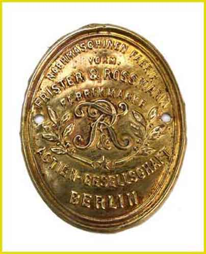
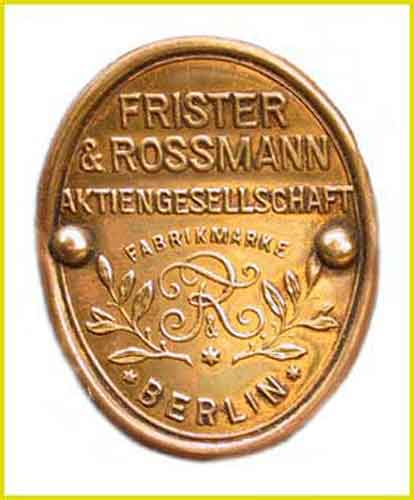
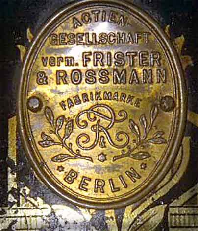
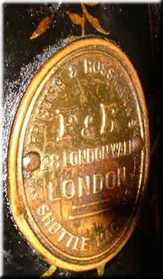
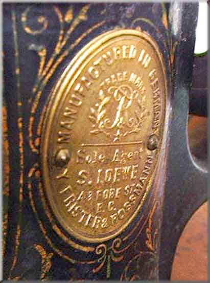
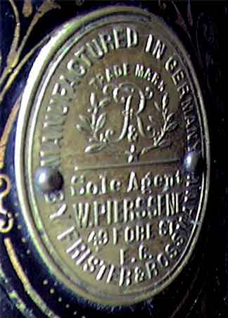
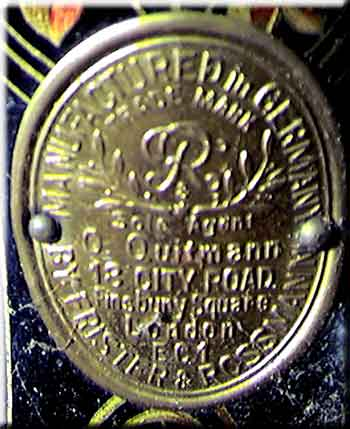
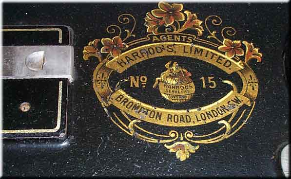

THE NEEDLEBAR
Catalogue of German Makers' Logos
Frister and Rossmann
Berlin

Picture courtesy of Ursel Niggemann

Picture courtesy of Ursel Niggemann

Picture courtesy of Jan Cnossen
Badges found on machines sold in England
Hermann Loog period 1883 - mid-1890's

Courtesy of Claire Sherwell
S. Loewe period mid-1890's - 1901

Courtesy of Claire Sherwell
William Pierssene period 1901 - 1914

O. Quitmann period, 1920 onwards

Harrod's Frister & Rossmann
This TS machine has no oval
brass badge on the pillar, is marked Frister & Rossmann on the arm,
and has a Harrods badge as a bed decal as shown below.

Picture courtesy of Linda Wray
© Alan Quinn 2000,
2004. All Rights Reserved
This page may not be reproduced
or distributed in part or in whole without the prior written permission
of the relevant copyright owner